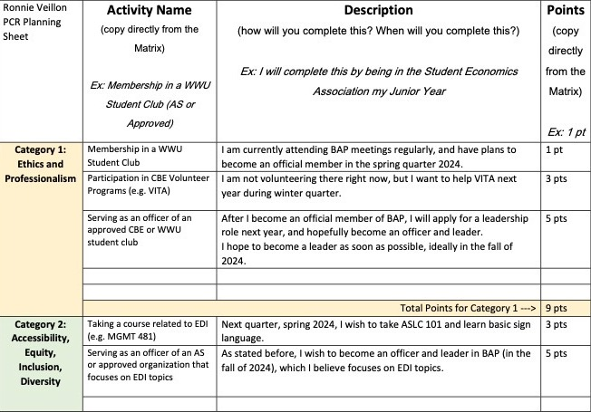
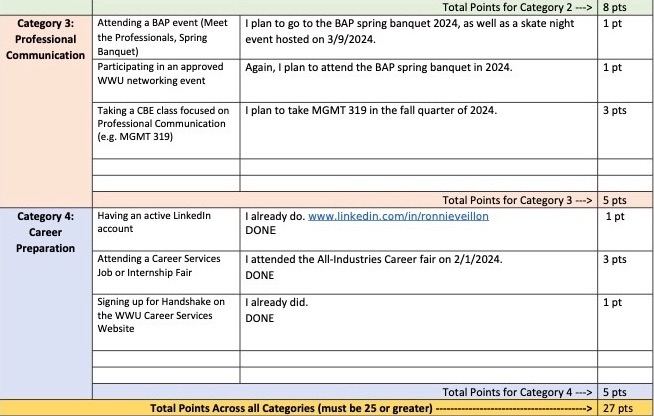

On February 1, 2024, I went to the All Services Career Fair held by Western Washington University. It was my first career fair that I have been to, so I was a bit nervous. However, I was able to reach out of my comfort zone and strike up conversations with several representatives at places like the IRS or VSH CPAs. While I didn't end up with an internship or even an interview, this event was a big learning expirience for me. I was able to learn about firms that I could comfortably end up working for. Overall, I'm glad I went to the career fair because it has prepared me for future career fairs, and given me a good grasp on how to communicate face to face with professional recruiters.